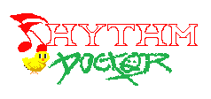

Description
Rhythm Doctor is a one-button rhythm game that aims to invisibly teach complex music and rhythm theory. The core mechanic is simple: slam your spacebar on the 7th beat to save patients in a hospital. But every level has a twist on that concept: polyrhythms, offbeats, hemiolas, irregular time signatures.. if those don’t mean much to you, don’t worry - it’s designed to make you learn rhythm theory without even realising it!
History
Two friends, Hafiz Azman and Winston Lee, learnt game development solely driven by one game idea, while studying Engineering and Actuarial Science at the University of Cambridge. At the time the game designer had been finishing his Diploma in Music programme, and the idea was of a game that would be able to teach complex music theory concepts invisibly. They released a demo and won an IGF nomination for the game back in 2014, while they were still in school. The response was overwhelming, with the online demo game being played more than 400,000 times. Now that they've graduated, they've expanded their team and are full-time on development to finish this game. Their game was Greenlit in March 2017 will be released in 2018.
Features
- 20+ handmade levels, each with their own story.
- Every level introduces a different concept of rhythm theory in an accessible way.
- A large cast of doctors and patients feature in an epic overarching storyline.
- Play solo campaign or grab a friend for drop-in drop-out local multiplayer throughout the whole campaign!
- Robust level editor with more than 400 community-made levels to play and learn from. Use your own music, place notes snapped to the beat, and use 50+ different visual effects and backgrounds.
- Blind mode, where the game can be played completely via audio cues only.
- Challenge levels and New Game+ modes for the brave.
- Full visual and audio calibration settings.
- A millisecond-precise rhythm engine, tested and tweaked over hundreds of hours.
Videos
Greenlight Trailer YouTube
Gameplay Overview YouTube
Images
{kind=link}
{kind=link}
{kind=link}
{kind=link}
{kind=link}
Logo & Icon
{kind=link}
Widgets
Awards & Recognition
- "IndieCade LA Finalist" IndieCade LA, 2017
- "WePlay China Best Overseas Game Nominee" China, 2017
- "Level Up KL Best Audio Winner" Malaysia, 2017
- "BICFest Best Audio Winner" South Korea, 2017
- "Indie Prize: Best Audio Award" Casual Connect, Singapore, May 2017
- "IGF Student Showcase Nominee" San Francisco GDC, 2014
- "PC Gamers' Top 50 Free Games of All Time" PC Gamer, 2016
- "Government Grant Recipient" Intellectual Property Creators Challenge (IPCC), Malaysia, 2015
- "Peru Startup Government Grant Recipient" Peru, 2017
Selected Articles
-
The base mechanic and premise of Rhythm Doctor are gold for me. Rhythm is in everything, and I'm glad the developers found it in medicine.
John Polson, IndieGames.com -
I found it hard to drag myself away from this little gem.
Colin Campbell, Polygon -
Rhythm Doctor is a trippy rhythm game that aims to invisibly teach you complex music and rhythm theory (...) It looks cool and sounds great.
Nathan Grayson, Kotaku -
A genuine masterclass in rhythm game design.
Laura K Dale, IndieHaven -
Even if you've checked it out before, please try this new build. It's deliciously difficult, and that's really what keeps me coming back.
Dale North, Destructoid -
A rad Rhythm Paradise-esque browser game (...) sadistically difficult.
Jeffrey Matulef, Eurogamer
Additional Links
- Gamasutra Interview
- Interview we gave in 2014 regarding our IGF nomination. gamasutra.com.
- Original Soundtrack
- Some of the music, uploaded as we go along. soundcloud.com.
- Rhythm Doctor Browser Demo
- Our online browser demo. fizzd.itch.io.
- Rhythm Doctor Greenlight Page
- Our Greenlight page (we were greenlit 28th March 2017) steamcommunity.com.
About 7th Beat Games
- Boilerplate
- We make hardcore one-button rhythm games!
- More information
- More information on 7th Beat Games, our logo & relevant media are available here.
Rhythm Doctor Credits
- Hafiz Azman
- Game Design, Programming, Music
- Winston Lee
- Artist
- Giacomo Preciado
- Programming
- Alberto Gonzalez
- Additional Programming
- Jakob Crowe
- Additional Level Designer
- Kyle Labriola
- PR/Marketing, Community Manager
Contact
- twitter.com/RhythmDrGame
- facebook.com/rhythmdrgame
- Website
- rhythmdr.com